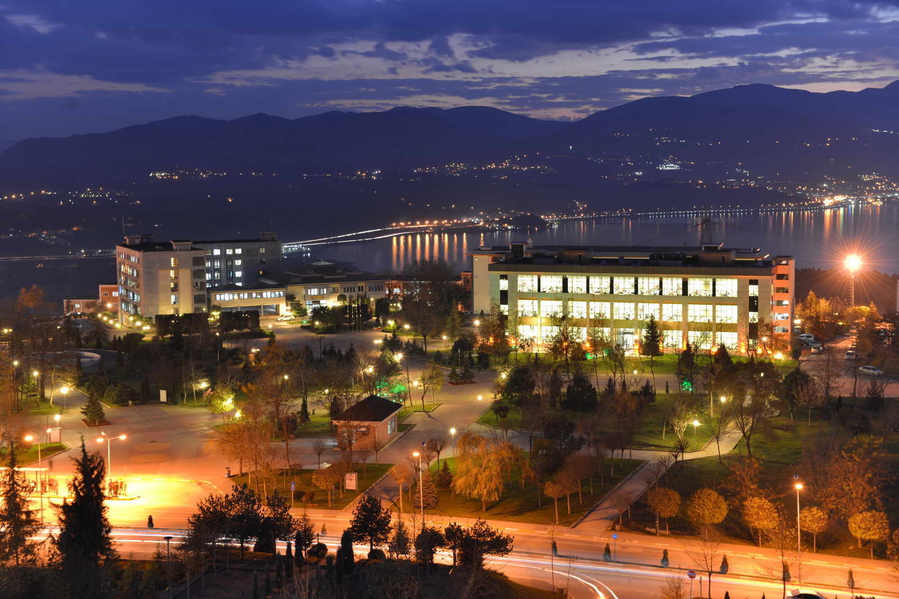

İZLEDİĞİM BAZI FİLMLER/DİZİLER


Merhaba, websiteme hoş geldiniz. Bu website Sakarya Üniversitesi Web Teknolojiler dersi için hazırlanmıştır.
İlkokul,ortaokul (Yaylıca İlkokulu-ortaokulu) ve liseyi (Yüksel Acun anadolu lisesi ve Birfen koleji) Hatay'da okudum.Şuan Sakarya Üniversitesinde bilgisayar mühendisliği okuyorum.1.Sınıf öğrencisiyim. Sakarya üniversitesinin resmi hesabına ulaşmak için buraya tıklayabilirisiniz.
